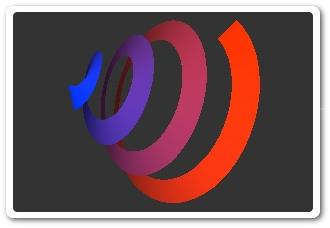
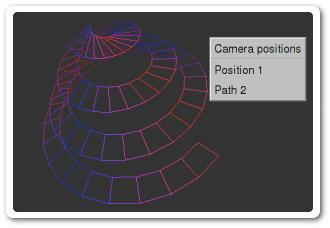
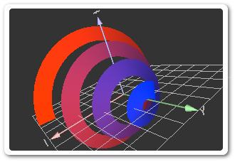
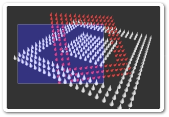
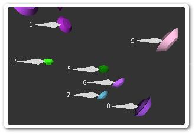
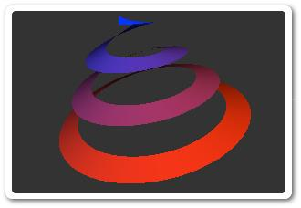

libQGLViewer examples
»» Introduction
»» Basic examples
»» Pedagogical examples
»» More complex examples
»» Compilation of the examples
Introduction
Many pedagogical examples illustrate some of the functionalities of the viewer and are provided for
understanding and cut and paste.
One should first try the basic examples listed below. A pre-compiled version of these is available for evaluation.
New developers should first read the introduction page to understand
the philosophy of the library.
Basic examples

simpleViewer
The simplest application example: 20 lines of code and yet all the power !
|

manipulatedFrame
A ManipulatedFrame can be moved with the mouse in the scene.
|
select
Selection of scene objects using select() and an GL_SELECT render mode.
|

keyboardAndMouse
Shows how to customize your keyboard and mouse bindings.
|
|
Pedagogical examples
animation
The animate() function illustrated by a water particle simulation.
|

callback
Using the Qt signal-slot mechanism to connect a QGLViewer to your scene.
|

clippingPlane
A clipping plane is manipulated using a ManipulatedFrame
|
constrainedCamera
Constraints applied on the Camera Frame to limit its translation and/or rotation.
|
constrainedFrame
Constraints can limit the translation and/or rotation of a (Manipulated)Frame.
|
drawLight
The drawLight() function is a light debugging tool.
|
fastDraw
The fastDraw() function enables interactivity even with large scenes.
|

frameTransform
Coordinate transformation between different Frames.
|

frustumCulling
Frustum culling using getFrustumPlanesCoefficients.
|
interface
Adding a graphical user interface around a QGLViewer.
|

keyFrames
The KeyFrameInterpolator test example.
|
luxo
A more complex example that combines ManipulatedFrames, selection and constraints.
|
mouseGrabber
MouseGrabbers enable complex mouse interaction.
|

multiSelect
Customized select() function that enables the selection of several objects.
|

multiView
A multi-view application, with constrained camera displacements.
|

screenCoordSystem
A saucers control viewer that illustrates the screen coordinate system feature.
|

standardCamera
A 'standard' Camera with fixed near and far planes.
|

stereoViewer
Simply press S to toggle stereo display (if supported).
|
|
More complex examples
3dsViewer
The LGPL lib3ds library is used to load and display a 3ds scene.
|
agora
Implementation of the game of Agora.
|

anaglyph
Displays a scene in pseudo-stereo using anaglyph.
|
backgroundImage
Displays a background image in the viewer.
|
blobWar
Implementation of the game of BlobWar.
|
dvonn
Implementation of the game of Dvonn.
|

eventRecorder
Records a scenario that can be replayed and converted into a movie.
|

quarto
A simulation of the game of Quarto.
|

terrain
A random fractal terrain with trees, animated water, sky and shadows.
|

textureViewer
Loads an image file and texture maps a polygon with it.
|

thumbnail
Displays an alternative 3D view in a corner thumbnail.
|

x3dViewer
The X3DToolkit library is used to load and display an x3d scene.
|
|
Compilation of the examples
Some pre-compiled examples are available for an easy evaluation of the library's functionnalities on
the download page. It is however better to recompile from the
sources to ensure a full compatibility with dependencies.
 If you installed the RPM, the examples' source files are in
If you installed the RPM, the examples' source files are in
/usr/share/doc/QGLViewer/examples (may have to be copied to a place where you have
write permission). If you have downloaded the tarball instead, simply go to the
examples directory. Then,
> cd exampleDirectory
> qmake [PREFIX=...] [INCLUDE_DIR=...] [LIB_DIR=...] [QGLVIEWER_STATIC=yes]
> make
The optional PREFIX, INCLUDE_DIR and LIB_DIR parameters are those you used
if you customized your make install. Use
QGLVIEWER_STATIC=yes to link with the static version of the library.
These commands can also be typed in the examples' main directory to compile all the examples.
You may be prompted with an "error while loading shared libraries" message when trying
to execute an example. You probably forgot to add the libQGLViewer.so directory to your
default library path. Simply do this (use LD_LIBRARYN32_PATH instead on some Unix
flavors):
[bash] > export LD_LIBRARY_PATH=${LD_LIBRARY_PATH}:/Path/To/libQGLViewer
[tcsh] > setenv LD_LIBRARY_PATH ${LD_LIBRARY_PATH}:/Path/To/libQGLViewer
Some configurations may require you to add LIBS *= -lXi in the .pro file.
Debian users may have to replace -lQGLViewer by -lQGLViewer-2 (change the
Makefile or create a link on libQGLViewer.so in your lib directory).
See also the Qt-Unix and libQGLViewer on Unix installation pages.
The examples' compilation is essentially identical to the one described above in the linux section.
Simply replace the above lines by:
[bash] > export DYLD_LIBRARY_PATH=${DYLD_LIBRARY_PATH}:/Path/To/libQGLViewer
[tcsh] > setenv DYLD_LIBRARY_PATH ${DYLD_LIBRARY_PATH}:/Path/To/libQGLViewer
You can safely ignore the prebound warning. Building a prebound library creates overlapping address
ranges. This requires further investigations and any help is more than welcome.
If you get a declaration of C function 'void qObsolete' conflicts with previous declaration or a
template with C linkage error message, try to install libQGLViewer somewhere else:
cd QGLViewer
make uninstall
qmake INCLUDE_DIR=/usr/local/include (for instance)
make install
Then compile the examples with the same qmake INCLUDE_DIR=/usr/local/include line. Any
explanation and cleaner solution is more than welcome.
See also the Qt-Mac and libQGLViewer on Mac installation pages.
 Windows users have to compile each example separately, using the Open Qt project * icon. With Visual Studio 6.0, use File-Open workspace to open the
Windows users have to compile each example separately, using the Open Qt project * icon. With Visual Studio 6.0, use File-Open workspace to open the
.dsp generated file.
Qt 2.3 users have to first edit the examples' .pro files (uncomment two lines and remove end of
file as explained. Remove QT_DLL from DEFINES for .NET). If no
Project created dialog is displayed when you open the .pro, try to run
Visual with Administrator priviledges. With Qt 2.3, you also have to add /GX /GR in
Project-Settings-C-C++, Project options before compilation and tune the include and lib
paths:
- Add the path to
libQGLViewer-2.2.6 (note there is no trailing QGLViewer) to your
Project-Properties-C/C++-General-Additional Include Directories *
- Add the path
libQGLViewer-2.2.6\QGLViewer to your
Linker-General-Additional Library Directories *. Visual 6
users may add Release (or Debug) to this path: it must be the directoy
where QGLViewer.lib is located.
All this should be done automatically if you use Qt version 3 or 4. Apply the same options to your
own projects if you didn't start them from one of the examples.
See also the installation advices for
Qt-Windows and
libQGLViewer on Windows.
* Names are given in .NET standards, and differ from those of Visual 6.
Here is a correspondance table:
| .NET | Visual Studio 6 |
|---|
| Open Qt Project | Generate Qt Project |
| Project-Properties-C/C++-General-Additional Include Directories | Tools-Options-Directories-Include files |
| Project-Properties-Linker-General-Additional Library Directories | Tools-Options-Directories-Library files |

 Last modified on Wednesday, July 4, 2007.
Last modified on Wednesday, July 4, 2007.